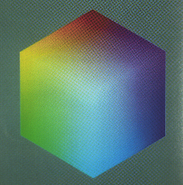

Ĉi-suba tabelo prezentas la nomojn kaj la RVB-valorojn de la bazaj koloroj de EGA; iliaj anglaj nomoj estas en pluraj normoj, ekz-e en HTML (http://www.w3.org/TR/WD-html40-970708/types.html#type-color) kaj en Ĝavo (en ties klaso Color).
Verdire, la fakte vidataj koloroj povas tre forte varii sur diversaj ekranoj kun malsamaj kontrasto kaj heldenso.
| Esperanto | 16-ume | HTML | Ĝavo | germana | rusa | |
|---|---|---|---|---|---|---|
| nigra | 000000 | black | schwarz | чёрный | ||
| malhele blua | 000080 | navy | dunkelblau | тёмно-синий | ||
| blua | 0000FF | blue | blau | синий | ||
| malhele verda | 008000 | green | grün | болотный | ||
| bluverda (turkisa) | 008080 | teal | blaugrün | бирюзовый | ||
| verda | 00FF00 | lime | green | hellgrün | зелёный | |
| cejana | 00FFFF | aqua | cyan | zyan, Türkis | голубой | |
| malhele griza | 404040 | dark gray | dunkelgrau | тёмно-серый | ||
| ruĝbruna | 800000 | maroon | rotbraun | каштановый | ||
| viola | 800080 | purple | lila | фиолетовый | ||
| oliva | 808000 | olive | oliv | оливковый | ||
| griza | 808080 | gray | grau | серый | ||
| hele griza | C0C0C0 | silver | light gray | hellgrau | светло-серый | |
| ruĝa | FF0000 | red | rot | красный | ||
| hele viola | FF00FF | fuchsia | magenta | violett | сиреневый | |
| oranĝa | FFC800 | orange | orange | оранжевый | ||
| roza | FFAFAF | pink | rosa | розовый | ||
| flava | FFFF00 | yellow | gelb | жёлтый | ||
| blanka | FFFFFF | white | weiß | белый | ||
KONST nedifinito = -1;
PROCEDURO unupolusigu(r, g, b : reela; VAR n, s, h : reela);
{Donite: RVB, ĉiu en [0, 1].
Dezirate: n en [0, 360] kaj s en [0, 1]; sed se s=0, n=nedifinito.}
VAR dis, ma, mi: reela;
STARTO
ma := maks(r, g, b);
mi := min(r, g, b);
h := ma; {la maksimuma subhelo}
SE ma ≠ 0 TIAM STARTO
dis := ma - mi;
s := dis / ma;
SE r = ma TIAM n := (g - b) / dis; {inter flava kaj viola}
ALIE SE v = ma TIAM n := 2 + (b-r)/dis; {inter lazuro kaj flavo}
ALIE SE b = ma TIAM n := 4 + (r-v)/dis; {inter viola kaj lazura}
n := n*60.0; {konvertu al gradoj}
SE n < 0.0 TIAM n := n + 360.0; {gradoj estu nenegativaj}
FINO ALIE STARTO
s := 0.0;
n := nedifinito;
FINO;
FINO {unupolusigu} PROCEDURO dupolusigu(r, g, b : reela; VAR n, l, s : reela);
{Donite: rvb, ĉiuj en [0, 1].
Dezirate: n en [0, 360] kaj s en [0, 1]; sed se s=0, n=nedifinito.}
VAR dis, ma, mi: reela;
STARTO
ma := maks(r, v, b);
mi := min(r, v, b);
l := (ma + mi) / 2; {ĉi tio estas la averaĝa helo}
SE ma = mi TIAM STARTO {grize:}
s := 0.0;
n := nedifinito;
FINO ALIE STARTO {kolore:}
SE l ≤ 0.5 TIAM s := (ma - mi) / (ma + mi);
ALIE s := (ma - mi) / (2 - ma - mi);
dis := ma - mi;
SE r = ma TIAM n := (v - b) / dis; {inter flava kaj viola}
ALIE SE g = ma TIAM n := 2+(b-r)/dis; {inter cejana kaj flava}
ALIE SE b = ma TIAM n := 4+(r-v)/dis; {inter viola kaj cejana}
n := n * 60.0; {konvertu en gradojn}
SE n < 0.0 TIAM n := n+360.0; {gradoj estu nenegativaj}
FINO {kolore}
FINO {dupolusigu}